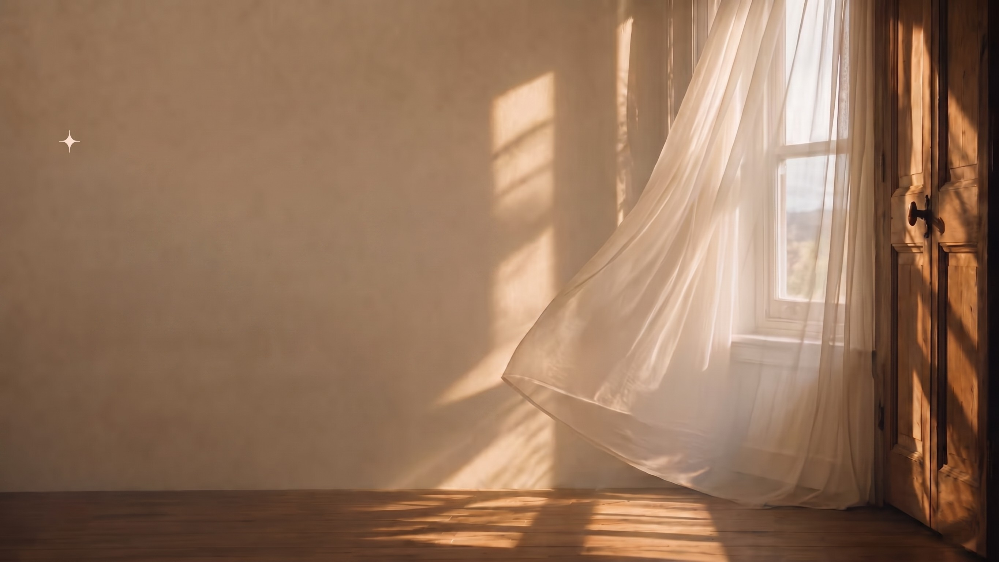
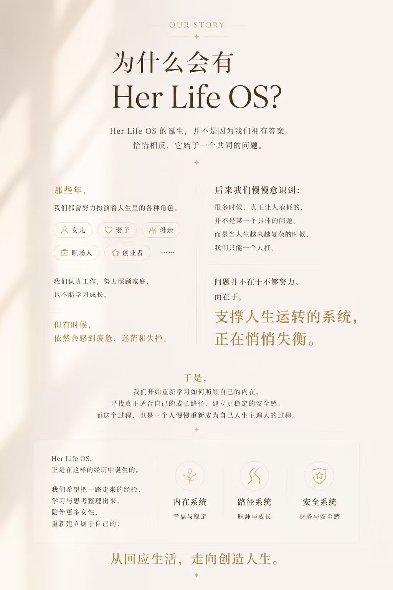
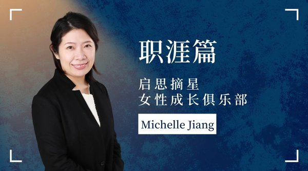

启思摘星 · 人生主理人计划
Her Life OS
人生不会自动变好。
但你可以选择，找回你的主理权。
你是不是也有这样的时刻？
后来我们发现：
很多时候，问题并不在于我们不够优秀，
也不在于我们不够努力。
而是支撑人生运转的系统，正在悄悄失衡。
内在的能量在消耗，前进的方向开始模糊，
安全感也渐渐建立在外界的评价与结果之上。
如果你愿意，不妨先用 5 分钟时间，
给自己一次停下来看看自己的机会。
看看此刻的自己，正处于怎样的人生状态。
本测评约需 5 分钟完成 · 通过 20 道题，了解你的内在系统、路径系统与安全系统状态

重构可长期运转的“人生系统”
三位分别深耕心理、职涯、财商领域的同行者，将陪你一起打理人生的三大底层系统，慢慢长出属于你自己的生命结构。
内在系统 · 重建感受力
稳定情绪状态 · 建立内在心理支撑网络
你快不快乐，不是结果问题，而是系统问题。在这里，我们陪你戒掉过度懂事，重新打理自己的情绪状态，建立坚不可摧的底层心理安全感。
核心实践模块
“我们不是来上课的，我是来陪你将那些你早就知道的道理，一点点轻柔地、无压力地过进你的日常生活里。”
路径系统 · 激发第二曲线
明确职业卡点 · 看清个人复利增长定位
幕后打拼多年的你，成不成长，取决于你有没有清晰的个人坐标轴。我们拒绝死板授课，而是教你如何在主业稳固的同时，探索自己热爱的复利赛道，建立可持续的成长模式。
核心实践模块

“成长不是逼自己更累，而是在对的时间、对的方向，用极其自然且轻盈的惯性推着自己向上走。”
安全系统 · 财务防爆网
重置财务智商 · 配置核心资产长效保值
你焦不焦虑，很多时候取决于你对外界风险的抗击打底气。不谈空洞的发财梦，我们教你理性梳理个人/家庭财务资产，提升防御未知风险的智慧，让底气变成选择的自由。
核心实践模块
“财务底气和幸福感不是赚得多决定的，而是当你对自己的资产流动了如指掌时，那种稳稳当当的掌控感。”
每一次成长，都始于三次人生升级
从看见自己，到赋能自己，再到创造属于自己的人生。
自我探索
成长的起点，不是改变，而是觉察。重新认识自己的情绪、价值观、优势与需求，看见那些长期被忽略的内在声音。当你开始理解自己，人生才真正开始发生改变。
自我赋能
仅仅看见问题还不够。我们需要学习如何照顾自己，管理情绪、规划成长、建立安全感，让人生从依靠意志力硬撑，逐渐转向依靠系统运转。当系统建立起来，人生会变得更加稳定而有力量。
自我创造
成长的最终目的，不是成为别人期待的样子。而是拥有更多选择权与创造力，主动决定自己想过怎样的人生。从回应生活，慢慢走向创造生活。
创始人小屋
在这里，你会认识三位陪伴者。
我们不是站在终点的人，而是同样走在成长路上的同行者。

重新建立属于自己的内在系统，找回稳定、幸福与生命的掌控感。
重新看见自己的优势与可能性，找到属于自己的成长路径。
为未来建立更稳定、更从容的安全底盘，让底气变成选择的自由。
一次关于 30+ 女性人生系统的深度觉察
生活不会自动变好，但你可以选择停下来看看自己，
重新设计属于自己的人生系统，成为自己的人生主理人。
人生主理人计划 · 初体验
一支约 60 分钟的完整视频：3 位创始人轮流出镜，分别带你走进幸福、路径与安全三大人生系统，看清为什么越努力越焦虑，找到当下最值得投入的成长方向。
女性人生系统主理人计划
围绕内在、路径、安全三大核心系统，以一份系统方案，陪你走过自我探索、自我赋能到自我创造的三次人生升级。